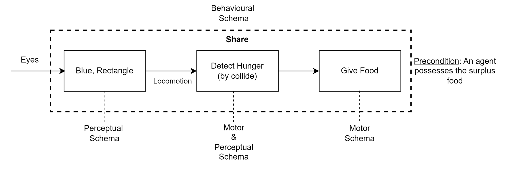
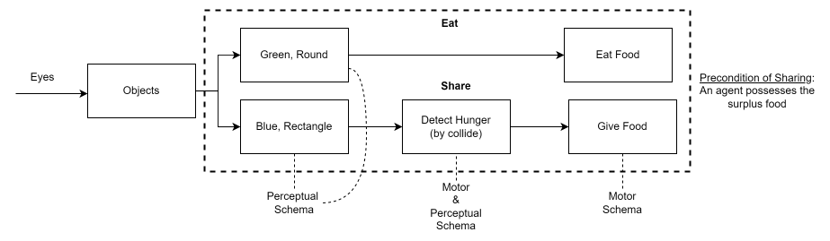
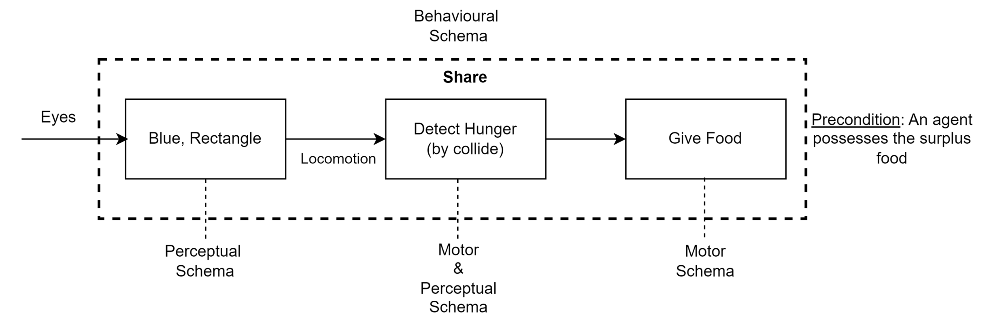
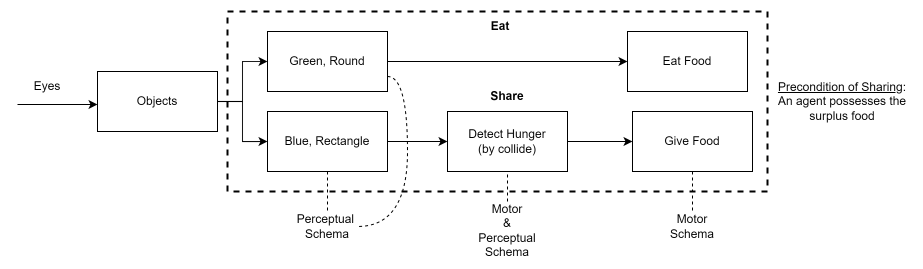
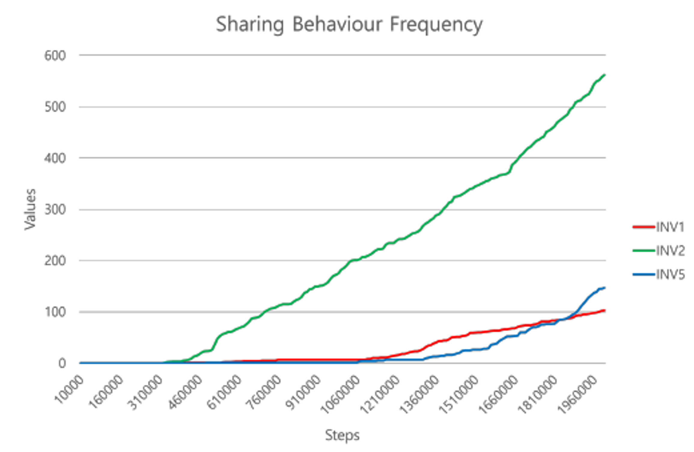

Can virtual agents learn an altruistic behavior?
Summary
This study explores the development of artificial agents capable of mimicking altruistic behaviors observed in nature, specifically food sharing. Using computational algorithms and reinforcement learning, virtual agents are designed to replicate behaviors that animals, like rats and chimpanzees, demonstrate when sharing food for mutual benefit. The research highlights how these agents, through reinforcement learning, learn to engage in altruistic acts when it enhances long-term self-interest.
The study concludes that artificial agents can effectively imitate altruistic behaviors under certain conditions, and that the frequency of sharing behaviors depends on factors like the agent's ability to store food. The findings suggest that such behaviors can be programmed into robots, potentially improving human-robot interactions by fostering trust and cooperation.
Logic of eating, sharing algorithm
 



Results
Agents with larger inventory capacities tend to share less frequently, as they are able to store surplus food, reducing the immediate need for reciprocal sharing. However, when programmed to share food based on the hunger levels of other agents, the virtual agents exhibited consistent altruistic behaviors, particularly when mutual benefits were assured. The frequency of sharing behavior increased over time, especially when agents could assess the needs of others, indicating that the agents learned to balance self-interest with altruistic actions effectively.
